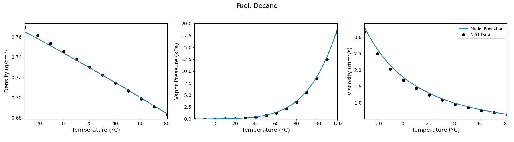
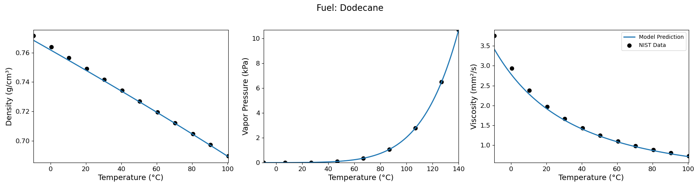
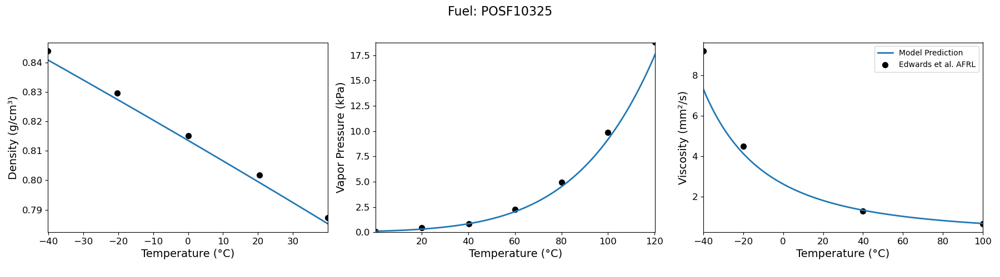

Properties and Model Equations
The Fuel Library for advanced research on evaporation (FuelLib) utilizes the group contribution method (GCM), as developed by Constantinou and Gani[1][2] in the mid-1990s, to provide a systematic approach for estimating the thermodynamic properties of pure organic compounds. The GCM decomposes molecules into structural groups, each contributing to a target property based on predefined group values. By summing these contributions, the GCM accurately predicts essential properties, including the acentric factor, normal boiling point, liquid molar volume at standard conditions (298 K) and more. This predictive capability is particularly useful for complex mixtures such as sustainable aviation fuels (SAFs), where experimental thermodynamic data is limited. FuelLib provides SAF developers with a means to estimate these critical properties without extensive physical testing, thereby aiding in the identification of promising fuel compositions before committing to large-scale production.
FuelLib was developed with SAF research in mind. It builds on Pavan B. Govindaraju’s Matlab implementation, and includes gas chromatography data (GC x GC) for various jet fuels from the Air Force Research Laboratory[3]. Additionally, FuelLib includes correlations for the thermodynamic properties of mixture such as density, viscosity and vapor pressure. The Section Table of GCM properties outlines the properties for the i-th compound in a mixture, which depends on the k-th first-order and j-th second-order group contributions.
Table of GCM properties
Property |
Units |
Group Contributions |
Units |
Description |
|---|---|---|---|---|
\(M_{w,i}\) |
kg/mol |
\(m_{w1k}\) |
g/mol |
Molecular weight. |
\(T_{c,i}\) |
K |
\(t_{c1k}\), \(t_{c2j}\) |
1 |
Critical temperature[1]. |
\(p_{c,i}\) |
Pa |
\(p_{c1k}\), \(p_{c2j}\) |
bar-0.5 |
Critical pressure[1]. |
\(V_{c,i}\) |
m3/mol |
\(v_{c1k}\), \(v_{c2j}\) |
m3/kmol |
Critical volume[1]. |
\(T_{b,i}\) |
K |
\(t_{b1k}\), \(t_{b2j}\) |
1 |
Normal boiling point[1]. |
\(T_{m,i}\) |
K |
\(t_{m1k}\), \(t_{m2j}\) |
1 |
Normal melting point[1]. |
\(\Delta H_{f,i}\) |
J/mol |
\(h_{f1k}\), \(h_{f2j}\) |
kJ/mol |
Enthalpy of formation at 298 K[1]. |
\(\Delta G_{f,i}\) |
J/mol |
\(g_{f1k}\), \(g_{f2j}\) |
kJ/mol |
Standard Gibbs free energy at 298 K[1]. |
\(\Delta H_{v,\textit{stp},i}\) |
J/mol |
\(h_{v1k}\), \(h_{v2j}\) |
kJ/mol |
Enthalpy of vaporization at 298 K[1]. |
\(\omega_i\) |
1 |
\(\omega_{1k}\), \(\omega_{2j}\) |
1 |
Acentric factor[2]. |
\(V_{m,\textit{stp},i}\) |
m3/mol |
\(v_{m1k}\), \(v_{m2j}\) |
m3/kmol |
Liquid molar volume at 298 K[2]. |
\(C_{p,\textit{stp},i}\) |
J/mol/K |
\(C_{pA1_k}\), \(C_{pA2_k}\),… |
J/mol/K |
Equations for GCM properties
The properties of each compound in a mixture can be calculated as the sum of contributions from the first- and second-order groups that make up the compound. For a given mixture, let \(\mathbf{N}\) be an \(N_c \times N_{g_1}\) matrix that represents the number of first-order groups in each compound, where $N_c$ is the number of compounds in the mixture and \(N_{g_1}\) is the total number of first-order groups as defined by Constantinou and Gani[1][2]. Similarly, let \(\mathbf{M}\) be an \(N_c \times N_{g_2}\) matrix that specifies the number of second-order groups in each compound, where \(N_{g_2}\) is the total number of second-order groups. The total number of groups \(N_g = N_{g_1} + N_{g_2} = 121\). Define a parameter \(W\) such that \(W = 0\) performs a first-order group only calculation, while \(W = 1\) includes second-order groups. The GCM properties for the i-th compound in the mixture are calculated as follows[1][2][5]:
Equations for individual compound correlations
This section presents correlations for physical properties that leverage the individual compound properties defined in Equations for GCM properties. These correlations make it possible to evaluate physical properties at non-standard temperatures and pressures, given that group contribution properties are only defined at standard conditions. The Reduced temperature quantities are used throughout this section for each compound i, provided \(T\) in \(^{\circ}\) K unless noted otherwise.
Property |
Units |
Description |
|---|---|---|
\(\nu_i\) |
m2/s |
Kinematic viscosity[6]. |
\(L_{v,\textit{stp},i}\) |
J/kg |
Latent heat of vaporization at 298 K[7]. |
\(L_{v,i}\) |
J/kg |
Temperature-adjusted latent heat of vaporization at 298 K[7]. |
\(V_{m,i}\) |
m3/mol |
|
\(C_{\ell,i}\) |
J/kg/K |
Liquid specific heat capacity[7]. |
\(p_{sat,i}\) |
Pa |
Symbol |
Definition |
Description |
|---|---|---|
\(T_{r,i}\) |
\(\frac{T}{T_{c,i}}\) |
Reduced temperature. |
\(T_{r,b,i}\) |
\(\frac{T}{T_{b,i}}\) |
Reduced temperature relative to normal boiling point. |
\(T_{r,\textit{stp},i}\) |
\(\frac{298 \text{ (K)}}{T_{c,i}}\) |
Reduced temperature relative to standard temperature. |
Kinematic viscosity
The kinematic viscosity of the i-th compound of the fuel,
is calculated from Dutt’s equation (Eq. 4.23 in Viscosity of Liquids[6]) provided \(T\) in \(^{\circ}\) C:
Latent heat of vaporization
The latent heat of vaporization for each compound at standard pressure and temperature is calculated from the enthalpy of vaporization as:
The heat of vaporization for each compound is then adjusted for variations in temperature[7]:
Liquid molar volume
The liquid molar volume is calculated at a specific temperature \(T\) using the generalized Rackett equation[8][9] with an updated \(\phi_i\) parameter[7]:
where
Liquid specific heat capacity
The liquid specific heat capacity for each compound at standard pressure temperature is calculated from the specific heat capacity as:
Saturated vapor pressure
The saturated vapor pressure for each compound is calculated as a function of temperature using either the Lee–Kesler method[10] or the Ambrose-Walton method[11]. Both methods solve
for the reduced saturated vapor pressure for each compound, \(p_{r,\text{sat},i} = p_{\text{sat},i}/p_{c,i}\). The default method in FuelLib is the Lee-Kesler method, as it is more stable at higher temperatures. The Lee-Kesler[10] method defines
The Ambrose-Walton[11] correlation sets:
with \(\tau_i = 1 - T_{r,i}\).
Equations for mixture properties from GCM
This section contains correlations for estimating physical properties of the mixture from the individual compound and physical properties defined in Equations for GCM properties and Equations for individual compound correlations. These correlations make it possible to evaluate physical properties at non-standard temperatures and pressures, given that group contribution properties are only defined at standard conditions. The Mixture properties available in FuelLib are listed in table below. Mass and mole fractions defined in Table ref{tab:mass-mole-fracs} are used throughout this section.
Symbol |
Units |
Description |
|---|---|---|
\(\rho\) |
kg/m3 |
Density |
\(\nu\) |
m2/s |
Kinematic viscosity |
\(p_v\) |
Pa |
Vapor pressure |
Symbol |
Definition |
Description |
|---|---|---|
\(Y_i\) |
\(\frac{m_i}{\sum_{k=1}^{N_c} m_k}\) |
Mass fraction of compound i. \(m_i\) is the mass of compound i. |
\(X_i\) |
\(\frac{n_i}{\sum_{k=1}^{N_c} n_k}\) |
Mole fraction of compound i. \(n_i\) is the number of moles compound i. |
Mixture density
The mixture’s density is calculated as:
Mixture kinematic viscosity
The kinematic viscosity of the mixture is computed using the Kendall-Monroe[12] mixing rule, with an option to use the Arrhenius[13] mixing rule. The viscosity of each component. Hernandez et al.[14] found, after evaluating thirty mixing rules, that both Kendall-Monroe and Arrhenius were among the most effective without relying on additional data or parameter fitting. The Kendall-Monroe rule is:
The Arrhenius rule is:
Mixture vapor pressure
The vapor pressure of the mixture is calculated according to Raoult’s law:
Validation: Single Component Fuels
 {kind=link}
{kind=link}
{kind=link}
Properties of decane, dodecane, and heptane. Data from NIST Chemistry WebBook.
Validation: Multi-Component Fuels
{kind=link}
Density, vapor pressure and viscosity predictions for POSF10325 against data from the Air Force Research Laboratory[3].